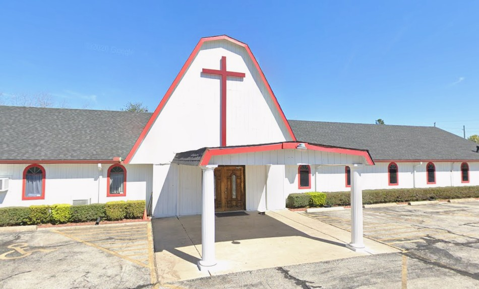
Hội Thánh Tin Lành Houston (C&MA)
12343 Old Walters Rd, Houston, TX 77014 Thờ Phượng: Chúa Nhật | 11:15am Quản Nhiệm: Mục Sư Trần Hữu Phúc An Tel: (281) 583-8821

12343 Old Walters Rd, Houston, TX 77014 Thờ Phượng: Chúa Nhật | 11:15am Quản Nhiệm: Mục Sư Trần Hữu Phúc An Tel: (281) 583-8821

3134 Frick Rd, Houston TX, 77038 Thờ Phượng: Chúa Nhật | 10:30am - 12:00pm Quản Nhiệm: Mục Sư Phạm Văn Huyên Tel: (713) 239-1466 Email: info@loichua.church
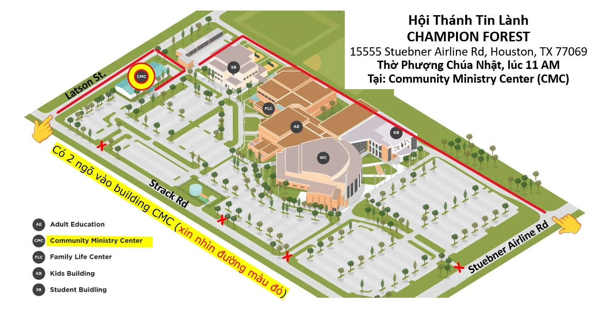
15555 Stuebner Airline Rd, Houston TX, 77069 COMMUNITY MINISTRY CENTER Building Thờ Phượng: Chúa Nhật | 11:00am - 12:15pm Quản Nhiệm: Mục Sư Thái Phú Quí Tel: (832) 688-3665
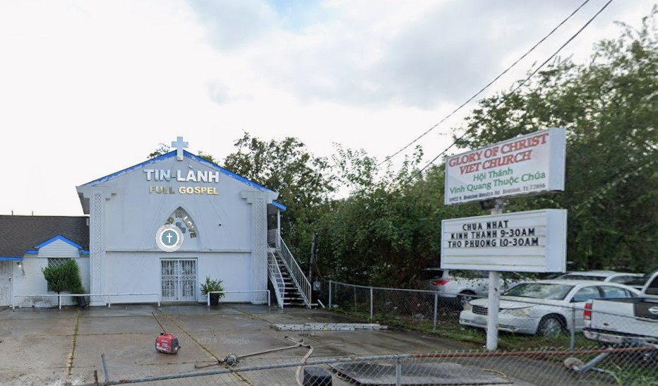
11922 N Houston Rosslyn Rd, Houston, TX 77086 Thờ Phượng: Chúa Nhật | 10:30am - 12:00pm Quản Nhiệm: Chưa Có Mục Sư Quản Nhiệm
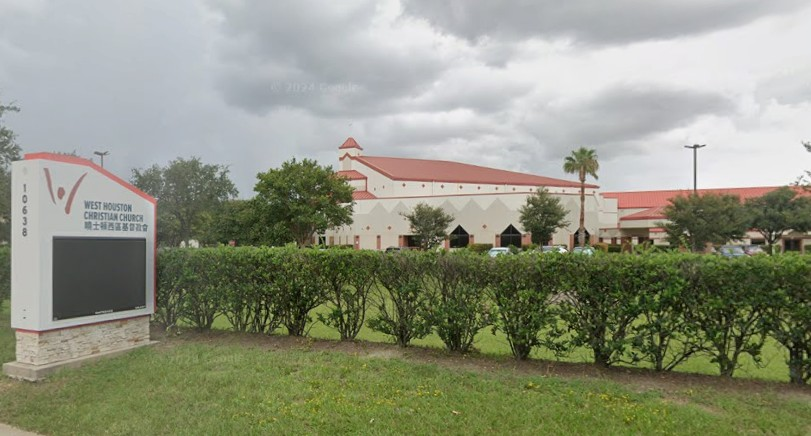
10638 Hammerly Blvd, Houston, TX 77043 Thờ Phượng: Chúa Nhật | 3:00 pm Quản Nhiệm: Mục Sư Lê Hoàn Thọ Tel: (346) 907-9076
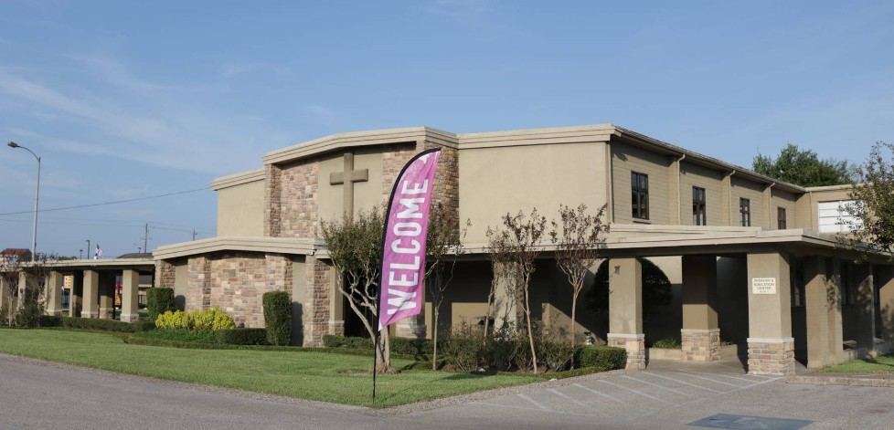
8009 Long Point Rd #1, Houston, TX 77055 Thờ Phượng: Chúa Nhật | 11:10am - 12:30pm Quản Nhiệm: Mục Sư Lê Văn Mười (Milton) Tel: (281) 851-1465
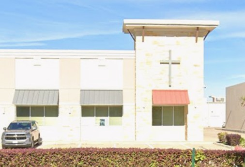
24968 Katy Ranch Rd, Katy, TX 77494 Thờ Phượng: Chúa Nhật | 3:00 pm Quản Nhiệm: Mục Sư David Tấn Mai Tel: (281) 495-7783
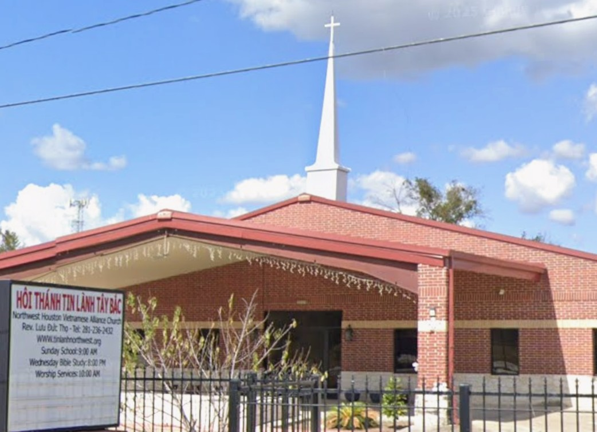
5135 Addicks Satsuma Rd, Houston, TX 77084 Thờ Phượng: Chúa Nhật | 10:00am Quản Nhiệm: Mục Sư Lưu Đức Thọ Tel: (713) 236-2432
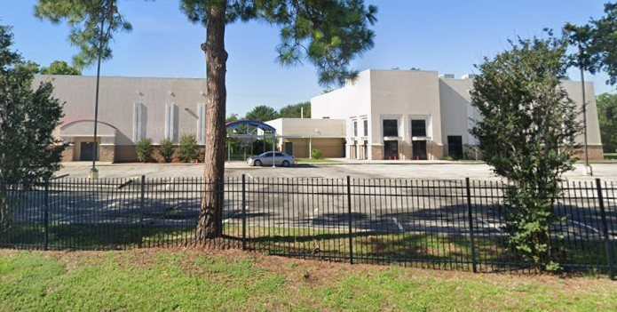
6100 Ridgemont St, Houston, TX 77087 Thờ Phượng: Chúa Nhật | 10:00am Quản Nhiệm: Mục Sư Huỳnh Quốc Khánh Tel: (713) 645-7766
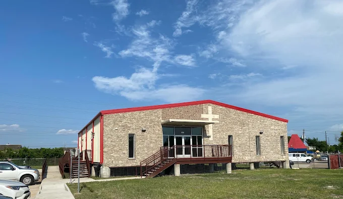
3675 Synott Rd, Houston, TX 77082 Thờ Phượng: Chúa Nhật | 11:00am Quản Nhiệm: Mục Sư Nguyễn Đức Duy Tel: (832) 652-3953
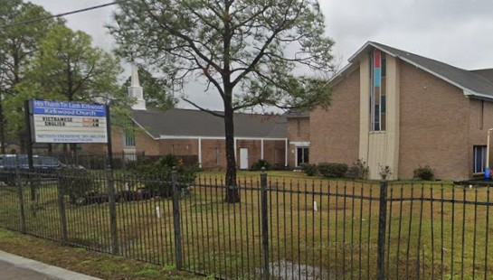
7602 S Kirkwood Rd, Houston, TX 77072 Thờ Phượng: Chúa Nhật | 9:30a AM Quản Nhiệm: Mục Sư David Tấn Mai Tel: (281) 495-7783
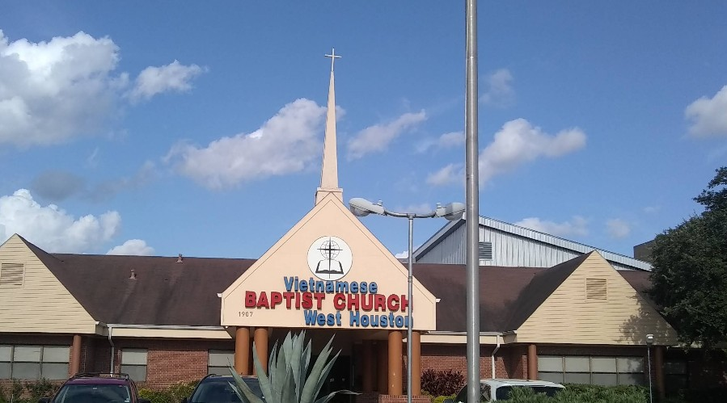
1907 S Dairy Ashford Rd, Houston, TX 77077 Thờ Phượng: Chúa Nhật | 11:15 AM Quản Nhiệm: Mục Sư Trần Tư Hồng Sơn Tel: (281) 752-5685
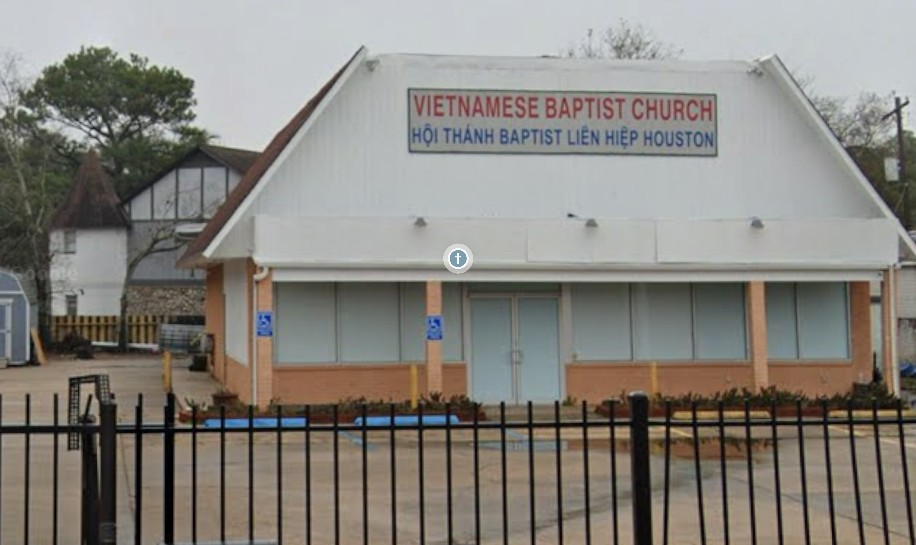
7601 Bissonnet St, Houston, TX 77074-5401 Thờ Phượng: Chúa Nhật | 9:30 AM Quản Nhiệm: Mục Sư Nguyễn Đỗ Bảo Thông Tel: (281) 818-4452
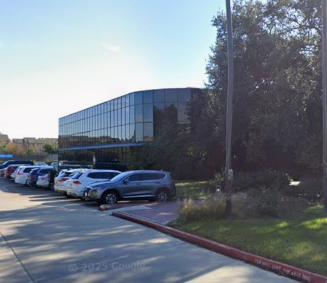
3535 Briarpark Dr, Houston, TX 77042 Thờ Phượng: Chúa Nhật | 10:30 AM Quản Nhiệm: Mục Sư Chung Tử Bữu Tel:(281) 818-5167 Email: htkhoidaumoi@gmail.com
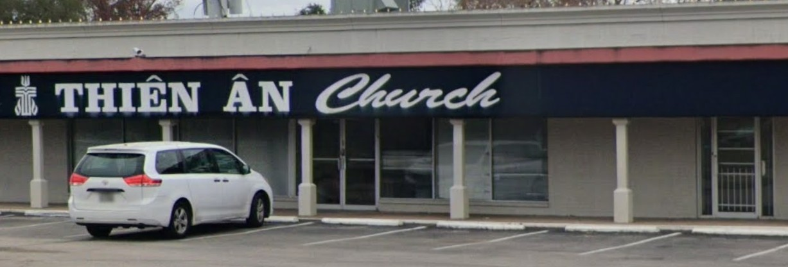
7621 Boone Rd Houston, TX 77072 Thờ Phượng: Chúa Nhật | 10:30 AM Quản Nhiệm: Mục Sư Hồ Việt Tel:713-249-0596 Email:mucsuhoviet@gmail.com
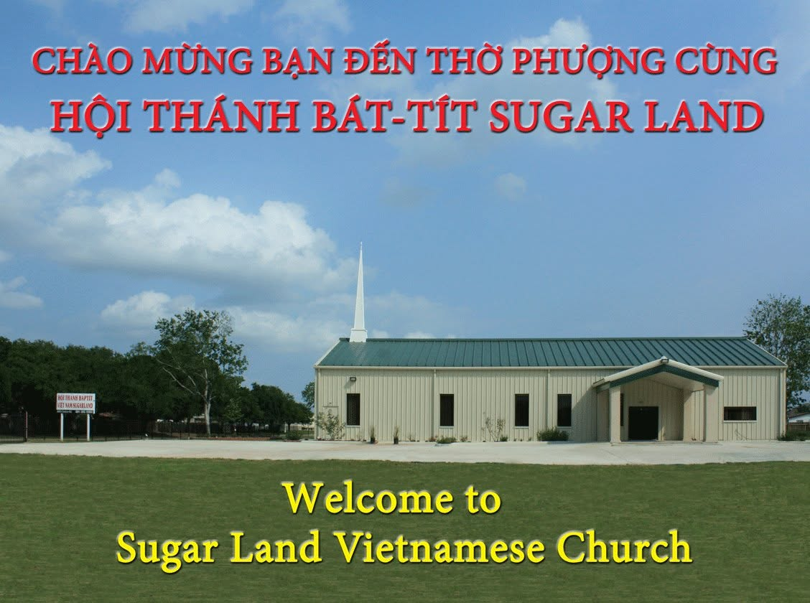
8000 Clodine Road Houston TX 77083 Thờ Phượng: Chúa Nhật | 10:00am - 11:30am Quản Nhiệm: Mục Sư Bùi Thế Hiền Tel: (281) 846-4938 Email: HTBTSugarLand@gmail.com
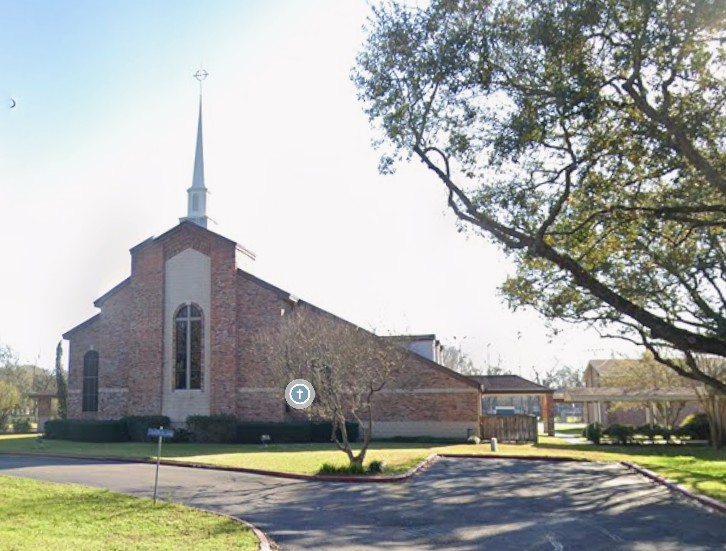
502 Eldridge Rd, Sugar Land, TX 77478 Thờ Phượng: Chúa Nhật | 1:30 PM Quản Nhiệm: Mục Sư Nguyễn Văn Đắt Tel: (832) 278-8542 Email: datv3@yahoo.com
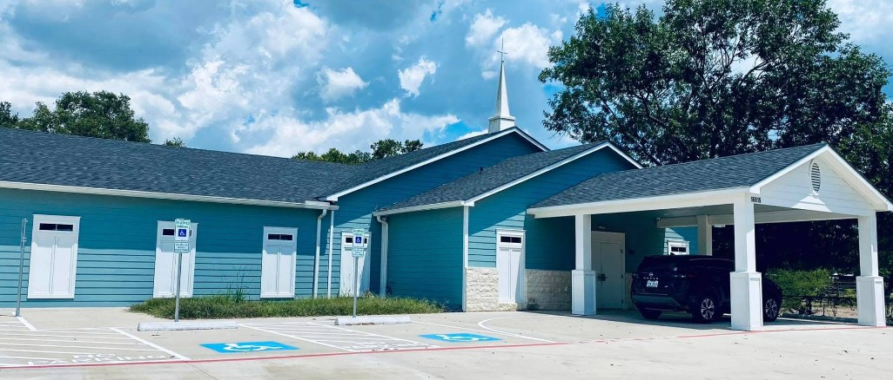
16815 Old Richmond Rd, Sugar Land, TX 77498 Thờ Phượng: Chúa Nhật | 3:00 PM Quản Nhiệm: Mục Sư Phan Thanh Liêm Tel: Email:
.png)
Trong tháng 8 năm 2026 chúng tôi sẽ tổ chức một đêm truyền giảng.
Trưởng Ban Hiệp Nguyện:Mục Sư Nguyễn Hữu Ninh